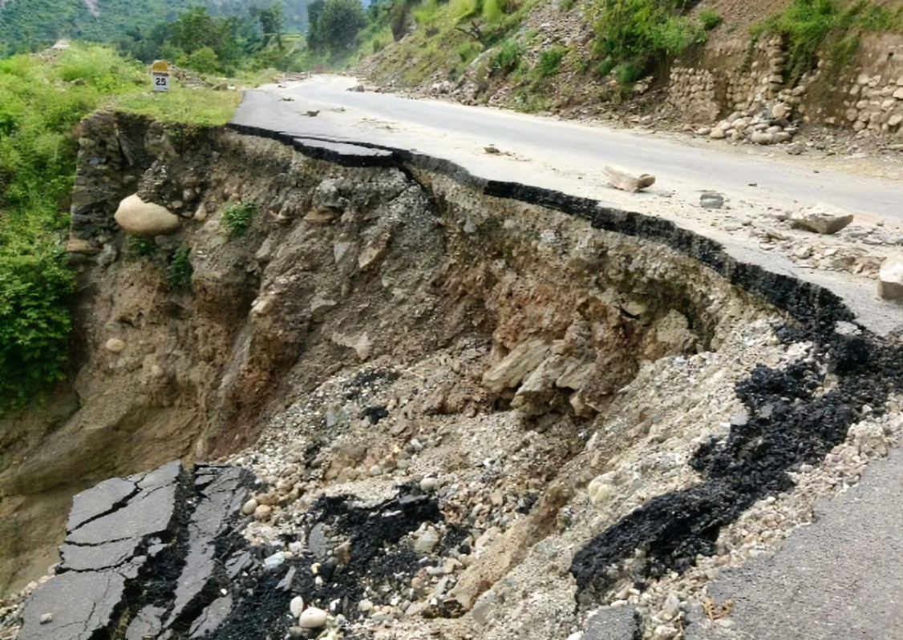
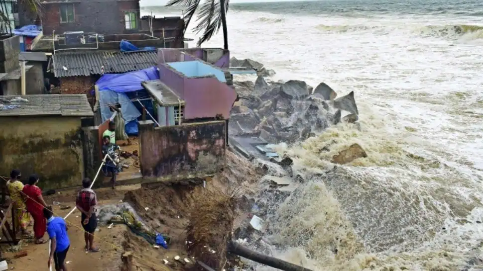
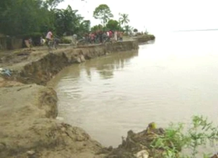
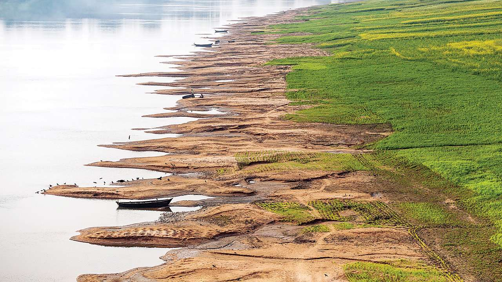
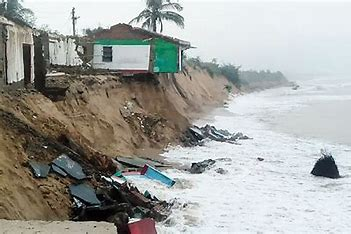
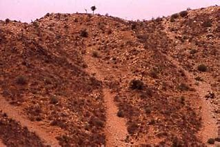
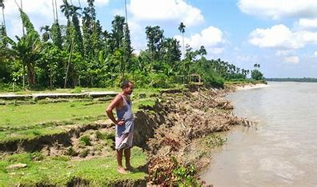
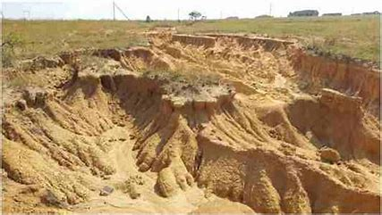
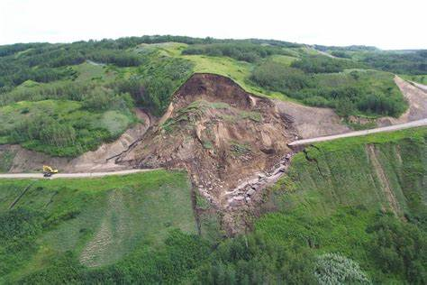
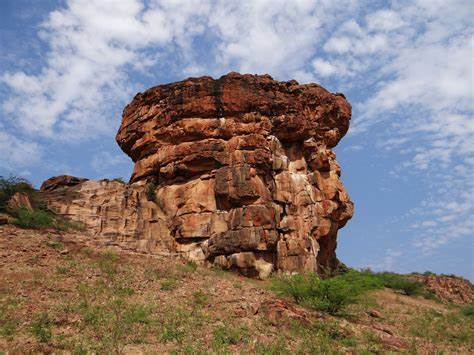

Some Indian cities and the types of geological erosion that occur there are:
- Uttarakhand (Himalayan Region):
- Soil Erosion Type: Primarily Water Erosion (Sheet and Gully Erosion)
- Explanation: Uttarakhand, situated in the Himalayan region, experiences significant water erosion due to steep slopes and heavy rainfall. The deforestation and construction activities amplify the soil erosion, leading to both sheet and gully erosion.
- Kerala (Western Ghats):
- Soil Erosion Type: Water Erosion (Sheet Erosion)
- Explanation: Kerala, part of the Western Ghats, faces water erosion issues, particularly sheet erosion. The region's lush forests help mitigate soil erosion, but deforestation and improper land use practices can contribute to soil degradation.
- Punjab (Indo-Gangetic Plains):
- Soil Erosion Type: Water Erosion (Sheet Erosion)
- Explanation: Punjab, located in the fertile Indo-Gangetic Plains, experiences sheet erosion due to intensive agriculture and improper irrigation practices. The flat topography makes it susceptible to water runoff and erosion.
- Maharashtra (Deccan Plateau):
- Soil Erosion Type: Water Erosion (Sheet Erosion), Wind Erosion
- Explanation: Maharashtra, part of the Deccan Plateau, faces both sheet erosion, primarily during the monsoon, and wind erosion in areas with low vegetation cover. Agricultural practices and deforestation contribute to soil erosion challenges.
- Odisha (Eastern Coastal Plains):
- Soil Erosion Type: Water Erosion (Sheet Erosion), Coastal Erosion
- Explanation: Odisha experiences sheet erosion during the monsoon season, and coastal erosion is a significant concern along the Bay of Bengal. Tidal actions and storms contribute to the loss of soil along the coastline.
- Rajasthan (Thar Desert):
- Soil Erosion Type: Wind Erosion
- Explanation: Rajasthan, home to the Thar Desert, primarily faces wind erosion due to low vegetation cover, arid conditions, and strong winds. The movement of sand dunes is a common phenomenon leading to soil degradation.
- Madhya Pradesh (Central Highlands):
- Soil Erosion Type: Water Erosion (Sheet Erosion)
- Explanation: Madhya Pradesh, located in the Central Highlands, experiences sheet erosion, particularly in areas with uneven topography and moderate to high rainfall. Agricultural activities and deforestation can contribute to soil erosion challenges
- Himachal Pradesh (Himalayan Region):
- Soil Erosion Type: Primarily Water Erosion (Sheet and Gully Erosion)
- Explanation: Similar to Uttarakhand, Himachal Pradesh experiences significant water erosion due to its hilly terrain and heavy rainfall. Both sheet and gully erosion are common, especially in areas with deforestation and human settlements.
- Assam (Brahmaputra Valley):
- Soil Erosion Type: Water Erosion (Riverbank Erosion)
- Explanation: The Brahmaputra Valley in Assam experiences riverbank erosion, where the powerful rivers, including the Brahmaputra, erode the banks. This type of erosion poses a significant challenge to agriculture and settlements along the river.
- Gujarat (Western Coastal Plains):
- Soil Erosion Type: Water Erosion (Sheet Erosion)
- Explanation: Gujarat, located in the Western Coastal Plains, faces sheet erosion during the monsoon season. Agricultural practices and land use decisions can contribute to soil erosion in certain areas.
- Jharkhand (Chota Nagpur Plateau):
- Soil Erosion Type: Water Erosion (Sheet Erosion), Gully Erosion
- Explanation: The Chota Nagpur Plateau in Jharkhand experiences both sheet and gully erosion, especially in areas with deforestation and mining activities. The undulating terrain makes it susceptible to water runoff and soil erosion.
- Karnataka (Deccan Plateau):
- Soil Erosion Type: Water Erosion (Sheet Erosion), Wind Erosion
- Explanation: Karnataka, part of the Deccan Plateau, faces sheet erosion during the monsoon and wind erosion in areas with low vegetation cover. Agriculture, deforestation, and improper land management practices contribute to soil erosion challenges.
- West Bengal (Gangetic Delta):
- Soil Erosion Type: Water Erosion (Coastal Erosion)
- Explanation: West Bengal, especially in the Gangetic Delta, experiences coastal erosion due to tidal actions and storm surges. This type of erosion is a significant concern in low-lying coastal areas.











